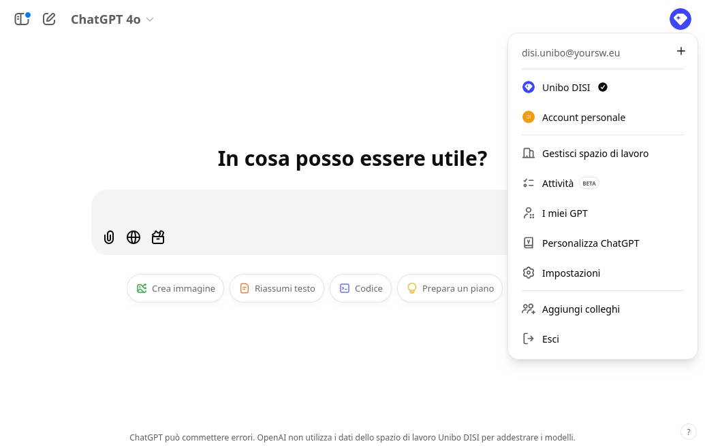
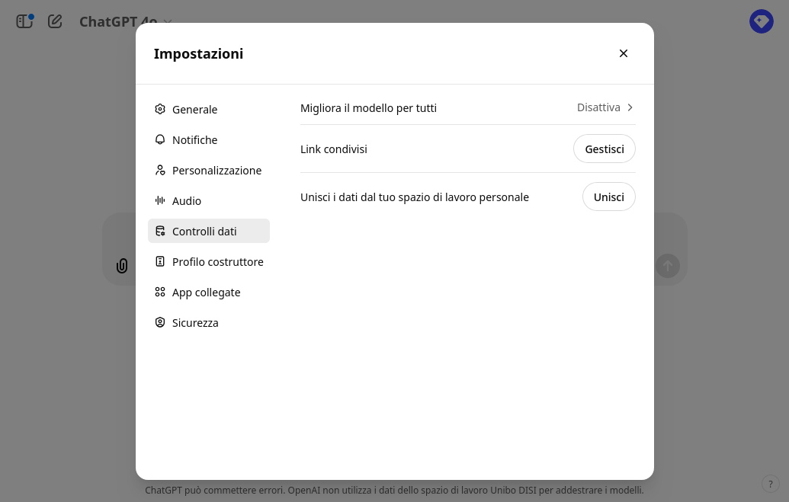
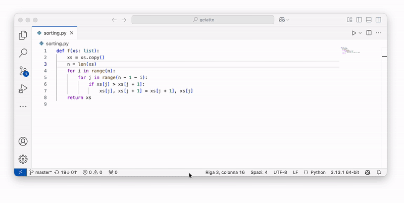

IA Generativa: Tecnologie ed Esempi di Utilizzo
Giovanni Ciatto, Dipartimento di Informatica — Scienza e Ingegneria (DISI), Sede di Cesena,
Alma Mater Studiorum—Università di Bologna
(versione presentazione: 2025-10-08)
Link a queste slide
Scaletta
GenAI: Intelligenza Artificiale Generativa
Algoritmi di IA in grado di generare automaticamente contenuti, e.g.:
- testo
- immagini
- audio e/o video
- codice [di programmazione]
- …
GenAI mediante Modelli Fondazionali (FM)
- Grosse reti neurali che imparano ad elaborare, “capire”, e produrre dati non [necessariamente] strutturati
- allenati su grandi quantità di dati, e con grandi risorse computazionali, a fare un po’ tutto
- con l’idea di poterli poi specializzare per compiti specifici
Terminologia: Modelli Fondazionali vs. Large Language Models
GenAI con modello di consumo as-a-Service
GenAI con modello di consumo as-a-Service
-
Modelli di costo:
- ad abbonamento: si paga un canone fisso mensile/annuale per avere accesso al servizio
- spesso contiene comunque limiti di consumo
- a consumo: si paga in proporzione all’uso effettivo del servizio
- ad abbonamento: si paga un canone fisso mensile/annuale per avere accesso al servizio
-
Consumo è misurato in base allo sforzo computazionale necessario per servire la richiesta:
- token processati (per testo)
- quantità di richieste effettuate per unità di tempo (minto, ore, giorno, mese)
- dimensione dei dati processati (per immagini, audio, video)
- complessità dello specifico modello impiegato per per servire la richiesta
-
La generazione da considerarsi un processo stocastico, per costruzione
- La qualità del servizio è soggetta a casualità e a fluttuazioni dovute a:
- carico del servizio
- scelta del modello, e relativo aggiornamento
- limiti di servizio eventualumente raggiunti nel quanto di tempo corrente
- caso
Servizio $\rightarrow$ Reattività
-
FM sono, per loro natura, reattivi $\implies$ GenAI risponde a prompt/richieste dell’utente
- non sono in grado di iniziare una conversazione
- non sono in grado di ricordare conversazioni passate
- (a meno che non siano state salvate e riutilizzate come contesto per la conversazione attuale)
-
Quando non-interrogati, FM sono inerti (non “pensano”, non “sognano”, etc.)
-
Eventuali comportamenti “proattivi” sono simulati tramite prompting opportuno
- avviato da procedura automatica (che a sua volta reagisce allo scorrere del tempo o altri eventi)
La maggior parte degli utilizzi sensati di GenAI assumono una qualche iniziativa dell’utente
Ciclo di apprendimento di GenAI
Ciclo di apprendimento di GenAI — Conseguenze (pt. 1)
-
Bias di campionamento: GenAI conosce solo ciò su cui è stato allenato + pia speranza che impari a generalizzare
-
L’apprendimento usa dati presi dal Web + eventuali dati aziendali del fornitore del servizio
- comprovato impiego delle interazioni degli utenti precedenti come feedback per allenamenti successivi
- Informazioni di nicchia possono non essere apprese correttamente (o affatto)
- Fondamentale evitare di convididere informazioni sensibili, confidenziali, o protette da diritti d’autore
Ciclo di apprendimento di GenAI — Conseguenze (pt. 2)
-
Cicli di apprendimento estramente costosi in termini di denaro e risorse computazionali…
-
… eseguiti periodicamente (settimane? mesi?) per migliorare la qualità del servizio
- il modello di consumo as-a-Service permette all’utente di avere accesso traspente al servizio aggiornato
- Informazioni recenti potrebbero non essere state (ancora) apprese
- Rischio di ricevere risposte datate o manchevoli da GenAI
- GenAI dà l’impressione di star imparando durante la conversazione, ma in realtà lo fa offline
Alcune soluzioni tecnologiche permettono di scegliere (pt. 1)
Alcune soluzioni tecnologiche permettono di scegliere (pt. 2)

Alcune soluzioni tecnologiche permettono di scegliere (pt. 3)

Alcune soluzioni tecnologiche permettono di scegliere (pt. 4)
Principali soluzioni tecnologiche
Categorizzate per tipo di interfaccia
- Conversazionali: e.g. ChatGPT, Claude, Scite
- Auto-completamento: e.g. GitHub Copilot
- Programmatiche: e.g. OpenAI Platform, Hugging Face
- In-App: e.g. Microsoft 365 Copilot
- Pre-confezionate: e.g. Suno, Runway
- Ispezione di materiale generato: e.g. GPTZero, ZeroGPT
Lista non esaustiva!
Interfaccia conversazionale
- Interazione testuale che mima una corrispondenza (chat)
- l’utente chiede, l’IA risponde reattivamente
- L’interfaccia permette l’inserimento di un prompt
- opzionalmente contenente allegati (e.g. immagini, documenti)
- Le risposte sono contestuali
- i.e., lo storico della conversazione impatta le risposte future
- La risposta contiene testo (spesso formattato)
- opzionalmente: immagini, URL, codice
Talvolta…
- … prima di rispondere, l’IA fa una ricerca su Web
- importante per avere risultati aggiornati
Interfaccia basata su auto-completamento
- L’IA suggerisce un completamento per il testo inserito
- e.g., codice, testo, URL
- L’utente accetta (anche in parte) o ignora il suggerimento
- Usato anche e soprattutto per codice di programmazione
Attenzione…
- … modello di costo ad abbonamento (vedi qui)
- … potenziali leak di informazioni sensibili
- … rischio di lock-in non trascurabile
Interfaccia programmatica
import asyncio
from openai import AsyncOpenAI
client = AsyncOpenAI(api_key="sk-1234567890abcdef1234567890abcdef")
async def main():
stream = await client.chat.completions.create(
model="gpt-4",
messages=[
dict(role="user",
content="European countries, one by line")
],
stream=True,
)
async for chunk in stream:
print(chunk.choices[0].delta.content or "", end=", ")
asyncio.run(main())
Output:
Albania, Andorra, Austria, Belarus, Belgium, Bosnia and Herzegovina, Bulgaria, Croatia, Cyprus, Czech Republic, Denmark, Estonia, Finland, France, Germany, Greece, Hungary, Iceland, Ireland, Italy, Kosovo, Latvia, Liechtenstein, Lithuania, Luxembourg, Malta, Moldova, Monaco, Montenegro, Netherlands, North Macedonia, Norway, Poland, Portugal, Romania, Russia, San Marino, Serbia, Slovakia, Slovenia, Spain, Sweden, Switzerland, Turkey, Ukraine, United Kingdom, Vatican City (Holy See),
-
Linguaggio di programmazione che interagisce con IA
- e.g., Python, JavaScript
-
L’interazione rimane di tipo richiesta-risposta
- il programma invia una richiesta, l’IA risponde
Abilitante per
-
Prompt parametrici, risposte processate automaticamente
- es.
list of LOCALITIES in AREA, one by line- dove
LOCALITIES$\in$ {cities,regions,states} - e
AREA$\in$ {Europe,Asia,Africa,America,Oceania} - risultati ordinati alfabeticamente
- dove
- es.
-
Scrittura software che usa l’IA come servizio
- utile in industria come in ricerca
Attenzione…
- … modello di costo a consumo (vedi qui)
- proporzionale al numero di token processati
- prezzi variabili per modello
Interfaccia in-app

-
GenAI integrata in applicazioni desktop o web
- e.g., Microsoft Office (Word, Excel, Outlook)
-
supporto per interfaccia conversazionale interna
- conversazione intrinsecamente contestualizzata
-
IA automatizza operazioni complesse (interne all’app)
- e.g., scrittura di bozze
- e.g., generazione di formule, grafici
Attenzione…
- … modello di costo ad abbonamento (vedi qui)
- … potenziali leak di informazioni sensibili
- … rischio di lock-in non trascurabile
Interfaccia per editing di audio-visivi (e.g. musica)

-
Interazione one-shot per generare il contenuto
- input: descrizione testuale del contenuto
- output: contenuto
-
L’interfaccia permette poi
- riproduzione del contenuto
- modifica del contenuto
- e.g., taglio di parti, modifica di tonalità
Esempio
Principali modalità d’utilizzo
Categorizzate per ruolo di GenAI
GenAI come…
- … motore di ricerca: uso GenAI per ricercare informazioni
- … assistente di (ri)scrittura: uso GenAI per (ri)scrivere documenti
- … assistente di lettura: uso GenAI per acquisire informazioni da documenti
- … assistente per l’elaborazione dei dati: uso GenAI per elaborare dati
- … generatore di contenuti: uso GenAI per creare contenuti
Lista non esaustiva!
GenAI come motore di ricerca
Disclaimer
GenAI non è un motore di ricerca come Google, Bing, DuckDuckGo, etc.
-
FM, di base, non accedono al Web (né interrogano qualche sorgente) prima di rispondere
- alcune tecnologie specifiche possono farlo, ma non c’è garanzia
-
FM, di base, rispondono in base a dati e conoscenze acquisite durante l’allenamento
- informazioni successive all’ultimo ciclo di apprendimento potrebbero non essere considerate
-
FM possono essere immaginati come grandi memorie
- in cui (porzioni de) lo scibile umano è stato “registrato”
- interrogabili tramite il linguaggio naturale
-
Le risposte di GenAI non vanno mai accettate acriticamente, in quanto suscettibili di allucinazioni:
- errori: informazioni fattualmente false o inventate, riportate con sicumera
- fraitendimenti: informazioni fuori contesto o non pertinenti rispetto all’aspettativa dell’utente
- bias: di campionamento delle informazioni, di selezione del motore di ricerca, intrinseci nel linguaggio, etc.
GenAI come motore di ricerca
Razionale
Possiamo considerare FM come esperti su tematiche che:
- siano temporalmente consolidate $\implies$ diffidare di risposte su temi recenti
- siano relativamente popolari $\implies$ diffidare di risposte su temi di nicchia
GenAI come motore di ricerca
Consigli sempre validi
-
verificare le fonti menzionate da GenAI
- esistono davvero? sono aggiornate?
-
verificare l’aderenza alle fonti
- la fonte dice davvero quello che GenAI ha riportato?
-
prediligere, se possibile, la lingua inglese
- LLM sono stati sicuramente esposti a più testi inglesi che italiani durante l’allenamento
Esempio: esplorazione sull’argomento “Qualità dell’aria in ER”, con ChatGPT
Vogliamo ottenere informazioni sul tema della qualità dell’aria in regione
-
la regione ER ha un sistema di monitoraggio della qualità dell’aria
-
larga parte del territorio è in pianura padana e quindi soggetta a problemi di inquinamento atmosferico
-
assumiamo che informazioni aggiornate siano disponibili sul Web
-
faremo l’esplorazione 2 volte:
- senza login, usando chat.openai.com, così che ChatGPT non possa fare ricerche sul Web
- con login, così che ChatGPT possa fare ricerche sul Web
- Prompt:
dammi informazioni sulla qualità dell'aria in emilia-romagna, cita le fonti - No login
- Risposta con informazioni di massima molto generali
- Prompt:
dammi informazioni sulla qualità dell'aria in emilia-romagna, cita le fonti - No login
- Risposta con informazioni di massima molto generali
- Vengono generati riferimenti (URL) a siti Web
- esistono davvero?
- il contenuto della risposta è coerente rispetto al sito citato?
- Prompt:
dammi informazioni sulla qualità dell'aria in emilia-romagna, cita le fonti - No login
- Risposta con informazioni di massima molto generali
- Vengono generati riferimenti (URL) a siti Web
- esistono davvero?
- il contenuto della risposta è coerente rispetto al sito citato?
- Rifacciamo la stessa domanda, previo login
- Informazioni più specifiche ed aggiornate
- Notare la sezione “Citazioni” sulla destra
- Rifacciamo la stessa domanda, previo login
- Informazioni più specifiche ed aggiornate
- Notare la sezione “Citazioni” sulla destra
- attivabile dal pulsante “Fonti” in fondo alla risposta
GenAI come assistente di (ri)scrittura
Razionale
- Interrogare GenAI per generare testo da riusare verbatim è un approccio naïf
- ci si affida in toto a GenAI, col rischio che sfuggano allucinazioni
- si rischia di ereditare bias ed errori semantici senza accorgersene
- Approccio più furbo: chiedere a GenAI di rielaborare un testo grezzo o parziale
- es. una lista di cose da dire, argomenti da trattare, etc.
- controllo e responsabilità del filo del discorso rimangono sull’utente
GenAI come assistente di (ri)scrittura
Consigli sempre validi
- tenere il controllo di cosa si vuole dire nel testo
- farsi assistere riguardo alla forma del testo
- rivedere il testo prodotto per errori, incongruenze, allucinazioni
- chiedere opportunamente variazioni fino a soddisfazione
- rivedere eventuali riferimenti a fonti o citazioni per aderenza
- chiedersi se non ci sia mancanza di informazioni o riferimenti importanti
Esempio: scrittura bollettino sulla qualità dell’aria, con ChatGPT
Vogliamo scrivere un breve bollettino sulla qualità dell’aria in Emilia-Romagna, a partire da dati grezzi disponibili in rete
-
Per una data specifica, es.
05-10-2025 -
Valutare i dati grezzi prima della generazione per capire cosa aspettarsi
- le celle arancioni rappresentano valori da attenzionare
Approccio 1 (Sconsigliato): Senza traccia
- Notare l’URL nel prompt
- ci aspettiamo che ChatGPT vi acceda prima di rispondere
- approccio sconsigliato!
- (non è detto che lo faccia)
- La risposta è una mera interpretazione dei dati
Stiamo lasciando margine a ChatGPT di scegliere la “linea editoriale”
Approccio 2 (problematico): Con traccia + URL
- Fornire esplicitamente la scaletta di cose da dire
- Notare l’URL nel prompt
- ci aspettiamo che ChatGPT vi acceda prima di rispondere
- approccio sconsigliato!
- (non è detto che lo faccia)
Approccio 3 (consigliato): Con traccia + allegato
- Fornire esplicitamente la scaletta di cose da dire
- Allegare i dati grezzi
- e.g. previa esportazione su file testuale
Altri tipi di supporto alla scrittura
Supporto alla traduzione automatica (pt. 1)
Meglio strumenti consolidati (e.g. Google Translate) o modelli fondazionali (e.g. GPT)?
(posto che la traduzione fatta da esperti umani sarà sempre migliore)
Altri tipi di supporto alla scrittura
Supporto alla traduzione automatica (pt. 2)
Chiediamo a Scite Assistant:
Altri tipi di supporto alla scrittura
Supporto alla traduzione automatica (pt. 3)
TL;DR: Google Translate è preferibile laddove sia richiesta precisione
Altri tipi di supporto alla scrittura
Supporto alla traduzione automatica (pt. 4)
TL;DR: GPT usabile laddove il contesto possa aiutare la traduzione
Altri tipi di supporto alla scrittura
Supporto alla traduzione automatica (pt. 5)
- Richiesta di transposizione in lingua con uno stile specifico
- Utile per migliorare la qualità scrittura in lingua
Altri tipi di supporto alla scrittura
Supporto alla generazione di codice di programmazione

(codice suggerito inefficiente, ma funzionante)
Altri tipi di supporto alla scrittura
Supporto alla documentazione del codice di programmazione
(spiegazione corretta ed articolata)
GenAI come assistente di lettura
Razionale
-
GenAI può essere usato per acquisire informazioni da documenti testuali [senza leggerli integralmente]
- e.g., estrarre highlights da un testo, sintetizzare un testo, etc.
-
La stessa idea si può applicare a contenuti multimediali
- e.g., estrarre highlights da un video, trascrivere un audio, etc.
Il testo [o contenuto] da cui estrarre informazioni deve essere fornito dall’utente
- Non presumere che GenAI conosca il testo [o contenuto] in questione
GenAI come assistente di lettura
Consigli sempre validi
-
Al crescere della lunghezza del testo, aumenta la probabilità di allucinazioni
- idem per durata dei contenuti multimediali
-
Verificiare che il testo [o contenuto] fornito non contenga informazioni sensibili o riservate
-
Verificare di avere il diritto di fornire a terzi [copie de] il contenuto
-
Tenere presente la possibilità di inevitabili distorsioni
- allucinazioni $\rightarrow$ l’estrazione potrebbe inventare informazioni non presenti nell’originale
- lacune $\rightarrow$ elementi importanti portebbero non essere estratti
Esempio: estrazione dalla traccia della prima prova di Italiano, maturità 2024
Si veda file P000_ORD24.pdf — 7 pagine, ben dense
Commenti
-
GenAI riesce a selezionare le informazioni richieste dal documento fornito
- e riportarne una sintesi
-
L’idea è di usare GenAI come un motore di ricerca specifico per il/i documento/i in questione
- Al crescere della dimensione del documento, aumenta la probabilità di allucinazioni, distorsioni, lacune
Spiegazione RAG (Retrieval-Augmented Generation)
- Quando si carica un allegato testuale in un’interfaccia conversazionale:
- LLM-provider crea un vector DB al volo, contentete frammenti (chunck) dell’allegato…
- … indicizzandoli semanticamente
- Per rispondere alle domande dell’utente, si estraggono i $K$ frammenti più semanticamente “vicini” al prompt
- Al crescere della dimensione del documento:
- aumentano i frammenti indicizzati
- diminuisce la probabilità che i $K$ frammenti estratti contengano tutte le informazioni rilevanti
Esempio: sintesi di documento (Policy di Ateno su GenAI)
Si veda file Policy-Generative-AI.pdf

Commenti
-
GenAI riesce a sintetizzare in poche righe intere pagine di policy
- cogliendo il senso generale del documento
-
Rischia di omettere dalla sintesi: sfumature, eccezioni, casi particolari
- Evitare di basarsi esclusivamente sulla sintesi di GenAI per interpretare un testo
- Utile fare domande specifiche o scettiche sul documento per catturare ulteriori dettagli
Esempio: confronto di documenti diversi
Confrontiamo due articoli giornalistici (su tema simile):


- Importante allegare i documenti da confrontare
- In assenza di specifiche, GenAI può inventare aspetti di confronto
Esempio: confronto di versioni diverse dello stesso documento
- Per questo caso d’uso, GenAI non è lo strumento migliore
- Esistono strumenti più adeguati, non basati su GenAI
Esempio: confronto di versioni diverse dello stesso documento
Comparatiamo due diverse versioni di https://arxiv.org/abs/2404.04108
Aprile 2024: https://arxiv.org/abs/2404.04108v1
Dicembre 2024: https://arxiv.org/abs/2404.04108v2
Esempio: identificazione di plagio (potenziale) in un documento
- Per questo caso d’uso, GenAI non è lo strumento migliore
- GenAI può essere usato per identificare similitudini concettuali tra testi
- Esistono strumenti più adeguati, non basati su GenAI
- e.g. Compilatio software ad hoc per l’identificazione del plagio
- personale UniBO può usufruire gratuitamente
Esempio: analisi della novelty di un documento
Esempio: supporto alla revisione di un documento (pt. 1)
-
Livello linguistico / formale (ortografia, grammatica, punteggiatura, concordanze)
-
Livello strutturale (coerenza logica tra sezioni, paragrafi e frasi)
- organizzazione complessiva (ordine delle idee, presenza di ridondanze o salti logici)
- allineamento del contenuto con lo scopo dichiarato nel documento
-
Livello semantico / contenutistico
- chiarezza concettuale: identificare ambiguità, impliciti, o concetti poco fondati
- rilevamento di potenziali contraddizioni o incoerenze interne
- identificazione di premesse non esplicitate o argomenti circolari
-
Livello argomentativo / retorico
- solidità logica delle argomentazioni
- bilanciamento tra asserzioni e prove o riferimenti
- analisi di bias retorici, appelli emotivi o fallacie logiche
- efficacia comunicativa rispetto al pubblico target
Esempio: supporto alla revisione di un documento (pt. 2)
Vogliamo individuare problemi nella leggibilità di un bando prima di pubblicarlo
Esempio: supporto alla revisione di un documento
Aspetti critici
-
Upload del paper potrebbe comportare violazione della riservatezza
- ricordarsi escludere il documento dai dati usabili per futuri cicli di allenamento
-
Evitare di delegare giudizi in merito all’accettazione/rifiuto del documento, ma limitarsi a usare GenAI per fini analitici
- specie se l’accettazione/rifiuto ha un impatto su altre persone e sulla comunità
- la responsabilità rimane sul revisore umano
-
ChatGPT tende ad essere accondiscendente e positivo, riportando punti di forza / limitazioni riportati nel documento stesso
- questo è un bias, che potrebbe rendere la revisione troppo superficiale
- altri LLM potrebbero avere lo stesso bias, o bias opposti
-
Si può richiedere una revisione aggressiva o critica … spostando il bias verso la negatività
Meglio limitarsi ad ispezionare il documento con GenAI e farsi un’idea prima di esprimere un giudizio
Personalizzazione di ChatGPT
- E’ possibile personalizzare il modo in cui GenAI riponde
- O specificandolo di volta in volta, o una volta per tutte
- Fornire istruzioni precise, in merito a:
- quanto essere conciso
- quanto essere accondiscendente
- se essere mellifluo o meno
- che forma dare in genere al testo
- (wall-of-text, elenchi puntati, etc.)
- tono della risposta (sarcastico, schietto, etc.)
- come gestire l’assenza di informazioni
GenAI come assistente per l’elaborazione dei dati
Razionale
-
GenAI può essere usato per elaborare dati, anche strutturati, semi-strutturati, o non strutturati
- e.g., tabelle, dataset, etc.
-
Vari tipi di elaborazione possibili, es:
- (semplicifi) operazioni di aggregazione o filtraggio di dati
- visualizzazione dei dati
- creazione di (semplici) modelli predittivi
- generazione di dati sintetici
-
Si istruisce GenAI ad operare come un analista dati o un data scientist
- fornendo i dati e le operazioni da eseguire, valutando i risultati
GenAI come assistente per l’elaborazione dei dati
Disclaimer
-
LLM, di per loro, sono imprecisi e non affidabili per il calcolo e l’analisi di dati
- specie al crescere del volume dei dati
-
Tuttavia, FM posssono generare codice di programmazione (dietro le quinte) per elaborare i dati
- compensando quindi la limitata capacità di analisi dei LLM
GenAI come assistente per l’elaborazione dei dati
Consigli sempre validi
-
Prima di caricare dati, verificare che non contengano informazioni sensibili o riservate, e di avere il diritto di fornirli a terzi
- escludere i dati dai futuri cicli di allenamento
-
Fare richieste precise, chiare, e possibili (rispetto ai dati forniti)
- riguardanti operazioni che in linea di principio comprendi e che potresti fare senza GenAI
-
Non fidarsi ciecamente dei risultati, verificare che siano corretti
- specie laddove siano svolti calcoli su dati numerici
-
Chiedere il codice sorgente delle operazioni svolte, per verificarle, e renderle riproducibili
-
Non delegare a GenAI operazioni che implichino punti di scelta e/o responsabilità
- es. scelta di un modello predittivo, scelta di un’operazione di aggregazione o discretizzazione, etc.
Esempio: studio attrattività dei corsi UniBO
Sfruttando gli open-data di Ateneo, e ChatGPT, possiamo velocemente analizzare l’attrattività dei corsi UniBO nel tempo
Passi concettuali
- [Manuale] scaricare i file CSV con i dati dei corsi, per ogni anno accademico
- convogliare tutti i dati in un’unica tabella
- aggregare i dati per categoria del CdL
- graficare tante linee temporali quante sono le categorie di CdL
- [Manuale] interpretare i grafici
Esempio: studio attrattività dei corsi UniBO
Commenti
-
Rimane da verificare che il codice generato produca davvero i risultati mostrati da GenAI
-
Il codice generato da GenAI è ciò che rende l’esercizio ispezionabile e ripetibile
-
Non è saggio delegare un aspetto decisionale del processo a GenAI
- e.g., interpretare i risultati come successo o fallimento di una politica accademica
- e.g., categorizzare i CdL sulla base del loro nome
Esempio: generazione di dati sintetici
In contesti di ricerca più essere interessante generare dati sintetici, simili a dati reali esistenti
Dettagli
(Comunemente, ci vuole controllabilità del processo di generazione)
-
Senza GenAI, si procede così:
- [Difficile, error-prone] stima della distribuzione di probabilità dei dati reali
- campionamento da questa distribuzione
-
Con GenAI, si evita la difficoltà del punto 1.1:
- istruire GenAI sulle differenze attese rispetto ai dati reali, forniti
- richiesta di generazione
- reiterare fino a soddisfazione
Esempio: generazione di dati sintetici sul datset Iris

Nuova classe sintetica: “Iris Immagina”, in giallo
import pandas as pd
import numpy as np
# Caricare il dataset originale
file_path = "/mnt/data/iris.csv"
iris_df = pd.read_csv(file_path)
# Aggiungere i nomi delle colonne corretti
iris_df.columns = ["sepal_length", "sepal_width", "petal_length", "petal_width", "class"]
# Definire i parametri per la nuova classe
num_samples = 150
sepal_length = np.random.normal(loc=7.0, scale=0.4, size=num_samples) # Sepalo lungo
sepal_width = np.random.normal(loc=3.2, scale=0.3, size=num_samples)
petal_length = np.random.normal(loc=2.0, scale=0.2, size=num_samples) # Petalo corto
petal_width = np.random.normal(loc=1.8, scale=0.2, size=num_samples) # Petalo largo
# Creare il nuovo dataframe
iris_immagina_df = pd.DataFrame({
"sepal_length": sepal_length,
"sepal_width": sepal_width,
"petal_length": petal_length,
"petal_width": petal_width,
"class": ["Iris-immagina"] * num_samples
})
# Unire i dati originali con quelli sintetici
extended_iris_df = pd.concat([iris_df, iris_immagina_df], ignore_index=True)
Notare che GenAI ha scelto arbitrariamente (ma ragionevolmente):
- di usare distribuzioni normali per i dati sintetici
- ed i parametri di queste distribuzioni
- di generare dati multi-dimensionali una componente per volta
Come?
| Feature | Original Mean (All Classes) | Original Std (All Classes) | Synthetic Mean (Iris-immagina) | Synthetic Std (Iris-immagina) | Rationale |
|---|---|---|---|---|---|
sepal_length |
5.85 | 0.83 | 7.0 | 0.4 | Scelto per essere più lungo delle altre specie |
sepal_width |
3.05 | 0.43 | 3.2 | 0.3 | Simile a Versicolor per non essere un outlier estremo |
petal_length |
3.77 | 1.76 | 2.0 | 0.2 | Corto per distinguersi dalle altre specie |
petal_width |
1.21 | 0.76 | 1.8 | 0.2 | Largo per renderlo unico rispetto alle altre specie |
Commenti
-
Rimane da verificare che il codice generato produca davvero i risultati mostrati da GenAI
-
Il codice generato da GenAI è ciò che rende l’esercizio ispezionabile e ripetibile
-
La scelta dei parametri per la generazione dei dati è stata arbitraria, ma ragionevole
- … GenAI ha correttamente interpretato le richieste dell’utente
-
Meglio sarebbe non avere questo margine di interpretazione
- i.e., l’utente dovrebbe specificare i dettagli di come generare i dati sintetici
GenAI come assistente alla generazione di contenuti
Razionale
-
GenAI può essere usata per generare contenuti di vario genere (sia da zero che modificando contenuti esistenti)
- e.g., immagini, video, audio etc.
-
Per la generazione di diagrammi, grafici, etc. è meglio indurre GenAI a generare codice, da renderizzare poi con strumenti dedicati
- e.g., codice Python/Matplotlib per grafici, codice PlantUML per diagrammi UML, etc.
-
Può essere utile chiedere a GenAI di generare loghi, concept, copertine, etc. per ispirazione
- in generale, GenAI funziona bene dove l’intuizione vale più della precisione
GenAI come assistente alla generazione di contenuti
Consigli sempre validi
-
Verificare che i contenuti generati siano originali e non violino copyright
-
Non delegare a GenAI la scelta di contenuti critici o sensibili
- e.g., scelta di un logo per un’azienda, scelta di un graphical abstract per un articolo, etc.
-
Non fidarsi ciecamente dei risultati, verificare che siano corretti, e non contengano bias o allucinazioni
Esempio: generazione di foto di fiori immaginari

Tentativo 1

(troppo irrealistica)
Tentativo 2

Non è così facile ottenere elevata verosimiglianza nelle immagini generate
Esempio: generazione di immagini di copertina
Come ho ottenuto la copertina di questa presentazione?
Esempio: generazione di immagini di copertina
Noto un probabile bias: studenti/docenti stereotipati come uomini bianchi
Esempio: generazione di immagini di copertina
Posso richiedere una modifica puntuale (notare la selezione dell’area da modificare)
Esempio: generazione di immagini di copertina
Il risultato

Non è così facile controllare con precisione la generazione di immagini
Utilizzi avantazi di GenAI
Progetti (pt. 1)
Idea: gruppi di chat correlate, con istruzioni e allegati in comune
Utili se bisogna riutilizzare le stesse istruzioni/allegati in molteplici conversazioni
Esempi / pattern di utilizzo
-
Processo di selezione di personale
- le istruzioni forniscono i criteri di selezione / esclusione
- allegati comuni possono contenere descrizione del profilo desiderato
- in ogni conversazione si allega solo il CV del candidato
i-esimoe si chiede di analizzarlo (rispetto ai criteri, per il profilo)- previa anonimizzazione
-
Processo di scrittua di un progetto (per bando competitivo)
- allegati comuni possono contenere il bando, il facsimile di proposta, esempi di progetti precedentemente finanziati, etc.
- le istruzioni forniscono indicazioni su cosa scrivere e come
- in ogni conversazione si allegano fonti, e ci si fa aiutare a riempire una diversa sezione del facsimile
- ogni bozza si allega ad una nuova conversazione per fini di revisione
Progetti (pt. 2)
Progetti (pt. 3)
Progetti (pt. 4)

ChatBot personalizzati
Idea: creare un ChatBot con conoscenza specifica su un dominio, o con competenze / obiettivi / istruzioni personalizzate
(“ChatBot” $\approx$ “GPT” nella nomenclatura di OpenAI)
-
Due interfacce: lato utente (conversazionale) e lato amministratore (istruzioni + allegati)
- OpenAI permette solo ad utenti paganti di creare ChatBot personalizzati
-
Possibilità (lato amministratore) di programmare azioni che il ChatBot potrà eseguire nell’interazione con gli utenti
- azione $\approx$ chiamata ad API Web esterne
Esempi / pattern di utilizzo
- ChatBot per rispondere a FAQ in un ambito specifico
- e.g. front desk di un corso (forma esame, orari, contenuti, etc.)
- e.g. help-desk per un prodotto, servizio, ufficio, etc.
- ChatBot per automatizzare operazioni ripetitive (che implichino chiamate a servizi Web)
- e.g. prenotazione di un appuntamento su un portale Web
- e.g. inserimento di un evento in calendario
- e.g. ricerca di informazioni su un motore di ricerca
- e.g. lettura dell’ora corrente su un orologio online
Esempio di ChatBot Personalizzato: Case Popolari ER (pt. 1)
Esempio di ChatBot Personalizzato: Case Popolari ER (pt. 2)
Esempio di ChatBot Personalizzato: Case Popolari ER (pt. 3)

Esempio di ChatBot Personalizzato: Case Popolari ER (pt. 4)
Esempio di ChatBot Personalizzato: Case Popolari ER (pt. 5)
Link: https://chatgpt.com/g/g-68e51cbcbcc881919d68a70d8853535a-fake-case-popolari-er
Esempio di ChatBot Personalizzato: Case Popolari ER (pt. 6)
Dichiarare / citare l’impiego di GenAI
Perché
- Trasparenza ed onestà — è giusto che i fruitori di un contenuto sappiano come è stato prodotto
- etica accademica — è giusto dare credito alle fonti
- accountability — è giusto che gli autori umani si prendano la responsabilità dell’impiego di GenAI
Dichiarare / citare l’impiego di GenAI
Quando dichiarare
Quando il contributo di GenAI è sostanziale al lavoro svolto
Esempi
-
Produzione di contenuti originali
- se la GenAI ha generato idee nuove o ha avuto un ruolo significativo nella scrittura di un documento
- se ha contribuito alla formulazione di un’ipotesi di ricerca o ha suggerito nuove prospettive
-
Analisi di dati con GenAI
- se GenAI ha aiutato ad interpretare dati, fare sintesi o individuare pattern innovativi
- se GenAI ha prodotto dati sintetici o aiutato a selezionare iper-parametri di modelli predittivi
-
Generazione o rielaborazione di testi
- se hai utilizzato la GenAI per scrivere una parte sostanziale del testo
- se la GenAI ha parafrasato, riscritto o ampliato sezioni importanti
-
Creazione di immagini, grafici, o contenuti audio/visivi
-
Se richiesto da regolamenti, docenti o editori
- alcuni docenti o riviste possono avere regole specifiche che impongono la dichiarazione dell’uso di GenAI
Dichiarare / citare l’impiego di GenAI
Quando non dichiarare
Quando il contributo di GenAI non è sostanziale, ma meramente di supporto
Esempi
-
Ricerche preliminari e brainstorming
- se hai usato la GenAI solo per raccogliere informazioni su un argomento, senza riportare testualmente i contenuti generati
-
Correzioni grammaticali e stilistiche
- se hai usato GenAI per migliorare la leggibilità, correggere errori grammaticali, o suggerire modifiche stilistiche.
-
Traduzione di frammenti di testo
- se la GenAI è stata usata per tradurre frasi o documenti, ma hai poi rivisto il testo manualmente
-
Uso di GenAI come assistente personale
- se hai utilizzato AI per riassumere articoli, fornire spiegazioni, o suggerire titoli, ma non hai riportato testualmente le sue risposte
A proposito di dichiarazioni
Queste slide sono state realizzate con l'aiuto di GitHub Copilot e ChatGPT.
Il primo è stato usato per velocizzare la stesura della prima bozza.
Entrambi sono stati usati per creare alcuni degli esempi e delle immagini qui presentate.
Ogni slide è stata rivista e verificata manualmente.
L'autore si prende la piena responsabilità per il contenuto di queste slide.